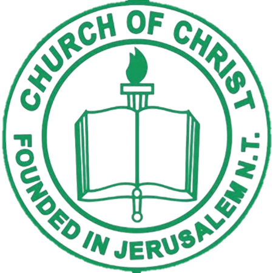

About SPC
Church of Christ Founded in Jerusalem New Testament San Pablo Local Church (CCFJNT SPC) is a local
congregation of the Church of Christ Founded in Jerusalem New Testament (CCFJNT). Our mission is to spread
the teachings of Jesus Christ and serve our community with love and compassion. CCFJNT SPC was established in
San Pablo City to cater to the spiritual needs of the local community. Over the years, we have grown in
faith and numbers, becoming a beacon of hope and faith in the area.
Church Location History
San Gregorio San Pablo City- Cauguiran Residence
Poblacion 4 Alaminos Laguna - Mingua Residence
San Gabriel "Makokak" San Pablo City - Cauguiran Residence
Guadalupe 2 "Kaliwa Triangulo" San Pablo City - Boone Residence
San Miguel Alaminos Laguna - Biral Residence
Del Remedio San Pablo City - Cauguiran Residence
San Francisco "D.I. Calihan" San Pablo City - Catapang Residence
Palma I Alaminos Laguna - Delos Reyes Residence
San Miguel Alaminos Laguna - Mingua Residence
San Nicolas San Pablo City - Current Church Building
Images of Church Temporary Location